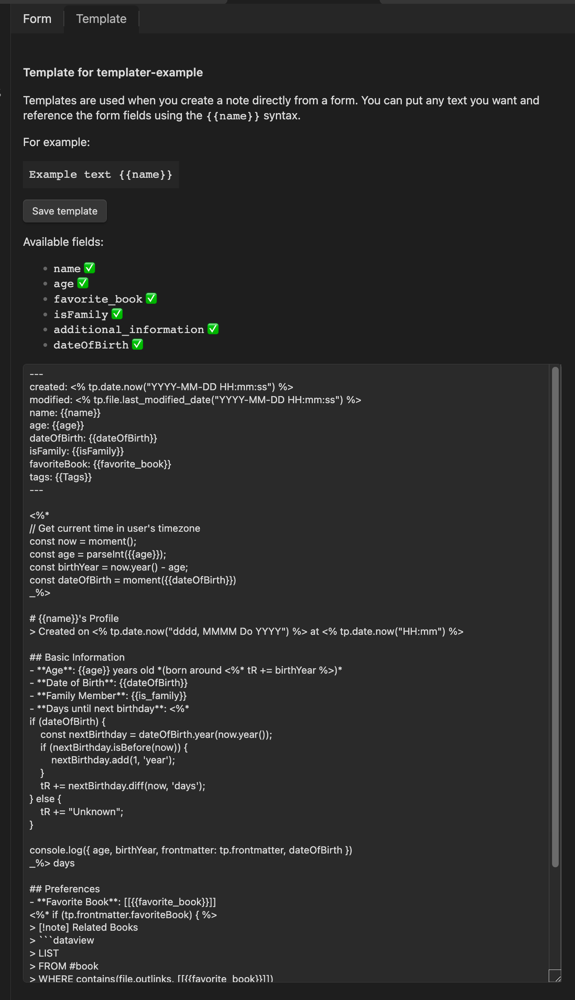
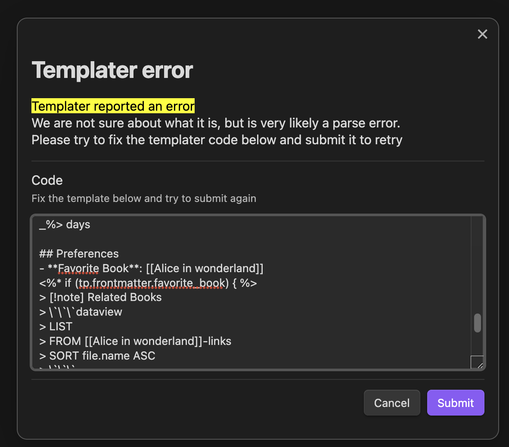

Release notes for 1.56.0
Templates now support Templater syntax
Modal Form 1.56.0 enhances its templates feature with Templater support! I'm particularly excited about this integration because, with a little addition we are greatly improving the usability of this plugin, but also Templater. Now binding a particular form to a complex template is easier than ever, knowing the fields available in the template also becomes a lot easier and I think the overall experience is greatly improved.

What's New
The Templater integration adds the following capabilities to form templates:
- Use Templater syntax (
<% %>) inside form templates - Process dates, files, and system information through Templater
- Automatic processing of Templater syntax after form variables are replaced
Here's a little example combining both syntaxes:
---
created: <% tp.date.now() %>
---
Dear {{name}},
Meeting scheduled for <% tp.date.now("MMMM Do, YYYY") %>
Location: {{location}}
Best regards,
{{signature}}
How it Works
The template processing now happens in two stages:
- First, Modal Form replaces all form variables (the
{{variable}}syntax) - Then, if Templater is available, it processes any Templater syntax in the resulting text
Retry Functionality
Getting templater templates right at the first try can be hard, that's why we added a retry option when templater processing part fails. If something goes wrong during templater processing , Modal Form now provides a retry modal where you can try to fix the template and try again.:

This makes it easier to fix any issues without losing your form data and gives you an insight on how te template is processed.
Check out the templates documentation for more details and examples of how to use this new feature.